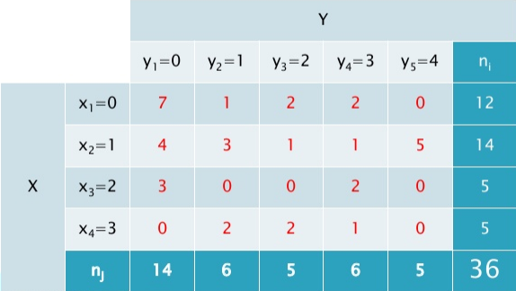

2.1 Tablas de doble entrada
Tablas de doble entrada
Este tipo de tablas, también llamadas tablas de contingencia, brindan información estadística de dos variables relacionadas entre sí, independientemente de si son cualitativas o cuantitativas.
Son útiles en casos en los cuales un experimento es dependiente del otro. Si haces memoria y recuerdas el ejemplo de las variables, X="nº de horas que dedicamos a dormir" e Y="nº de horas que dedicamos a ver la televisión", ¿sería conveniente colocarlas en una tabla de doble entrada?, ¿podríamos detectar una relación entre ambas? La experiencia nos dice que sí.
|
Imagen de elaboración propia
|
En la siguiente presentación verás con un ejemplo cómo se crean estas tablas:
Recuerda que las tablas de doble entrada son útiles en casos en los que tenemos gran cantidad de datos o en los que los pares de datos pueden aparecer repetidos. En caso contrario, hacemos uso de una tabla simple.
Mira el siguiente ejemplo:
Estamos estudiando las notas de un grupo de alumnos en las asignaturas de Matemáticas (X) y Geografía (Y) y pretendemos recogerlos en una tabla. Los resultados han sido los siguientes: (6,7), (7,8), (9,8), (6,6), (4,3), (7,7), (3,4), (4,5) y (5,5), donde cada par corresponden a las notas de Matemáticas y Geografía de cada alumno, la forma más sencilla de ordenarlos sería:
Cuando tenemos los datos de una variable agrupados por intervalos, las frecuencias corresponden al número de observaciones que hay en cada intervalo.
En el siguiente vídeo puedes ver una explicación detallada sobre cómo construir una tabla de doble entrada:
Vídeo de estudiia alojado en Youtube
Ejemplo o ejercicio resuelto
Vamos a trabajar con la tabla de la presentación anterior para sacar algunas conclusiones. Recuerda que X="número de días por mes en los que se supera el límite permitido de concentración de NO2", e Y="número de días por mes en los que se supera el límite permitido de concentración de ozono".
|

|
AV - Actividad de Espacios en Blanco
En una de las estaciones meteorológicas del Alto Guadalquivir se han recogido medidas de temperatura media (ºC) y precipitaciones medias (l/m2) cada mes. Los datos de los años 2007 y 2008 son los siguientes:
El primer par significa que en Enero de 2007 la media de temperatura fue de 7,5 ºC y la media de precipitaciones fue de 7,7 l/m2.
Con estos datos, completa la tabla de doble entrada en la que las variables son X = "Temperatura media mensual" e Y = "Precipitaciones medias mensuales". Fíjate que en este caso las variables se han agrupado por intervalos. En la primera casilla tendrás que contar el número de meses en los que la temperatura media está entre 0 y 10 grados, y las precipitaciones entre 0 y 30 l/m2, que son los pares (7,5 ; 7,7) y (7,5 ; 6,1), por lo que en esa casilla pondremos un 2.
Distribuciones marginales
Al analizar una distribución bidimensional, uno puede centrar su estudio en el comportamiento de una de las variables, con independencia de cómo se comporta la otra. Estaríamos así en el análisis de una distribución marginal.
Importante
En una variable bidimensional (X,Y), cada una de las variables por separado (X) e (Y) constituyen variables unidimensionales estadísticas. A estas variables se les conoce como marginales.
Las distribuciones marginales de las variables estadísticas X e Y se obtienen a partir de la tabla de doble entrada considerando una sola variable.
La distribución condicional de X dado Y=yj: expresa cómo se distribuye X en la subpoblación que cumple la condición de presentar el valor Y=yj.
La distribución condicional de Y dado X=xi: expresa cómo se distribuye Y en la subpoblación que cumple la condición de presentar el valor X=xi.
En el siguiente vídeo puedes ver en un ejemplo práctico qué son las distribuciones marginales y condicionales:
Vídeo de KhanAcademyEspanol alojado en Youtube
Para la distribución marginal de X tomamos la primera y última columnas de la tabla de doble entrada.
Para la distribución marginal de Y tomamos la primera y última filas de la tabla de doble entrada.
De esta forma, podemos calcular sus medias y sus desviaciones típicas, como hacíamos en el tema anterior:

Imagen de elaboración propia
Veamos un ejemplo de cómo se calcula la media y la varianza de una distribución condicional.
Caso práctico
Volvamos al ejemplo anterior. Supongamos que queremos estudiar el número de días por mes en los que se supera el límite permitido de concentración de NO2, sabiendo que el número de días por mes en los que se supera el límite permitido de concentración de ozono es 2.
Calcula la media y la desviación típica de X/Y=2.
Importante
Uno de los objetivos del análisis de distribuciones bidimensionales es estudiar si existe asociación o relación entre las variables X e Y.
Las variables X e Y se dicen que son estadísticamente independientes si los valores de una de ellas no afecta a la distribución de la otra. Esto equivale a decir que todas las distribuciones condicionadas sean iguales.
De modo equivalente se dice que las variables X e Y son estadísticamente independientes si se cumple que la frecuencia relativa conjunta es igual al producto de las frecuencias relativas marginales.